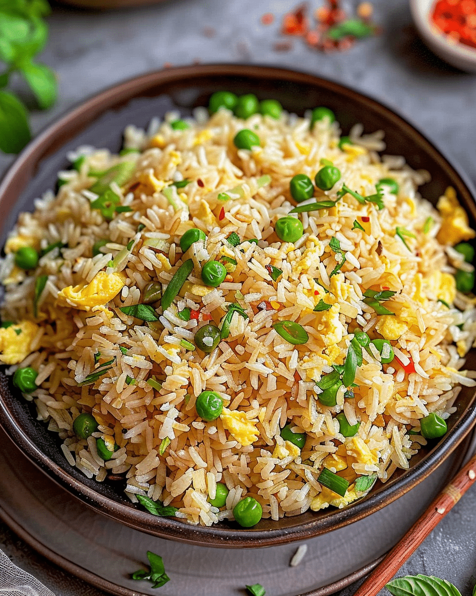

Vegetable Fried Rice
⭐⭐⭐⭐⭐ 4.8 Rating | ⏱ 30 Minutes | 🍽 4 Servings
Category
Lunch / Dinner
Difficulty
Easy
Calories
340 kcal
Cooking Style
Stir-Fried
📋 Ingredients
- 3 cups Cooked Rice
- 1 Carrot (Chopped)
- ½ cup Green Beans
- ½ cup Cabbage (Shredded)
- ¼ cup Green Peas
- 1 Onion (Sliced)
- 2 Garlic Cloves (Chopped)
- 1 tsp Ginger (Chopped)
- 2 tbsp Soy Sauce
- 1 tsp Black Pepper
- 2 tbsp Oil
- Salt to Taste
- Spring Onions for Garnish
🍳 Required Utensils
- Wok or Large Frying Pan
- Spatula
- Knife
- Cutting Board
- Mixing Bowl
- Serving Plate
📖 Introduction
Vegetable Fried Rice is a popular Indo-Chinese dish made by stir-frying cooked rice with fresh vegetables, soy sauce, and seasonings. It is quick to prepare and perfect for lunch or dinner.
🔬 Principle
Cooked rice is stir-fried over high heat with vegetables and sauces. High-temperature cooking keeps the vegetables crisp while evenly coating the rice with delicious flavors.
👨🍳 Procedure
- Cook the rice and allow it to cool completely.
- Heat oil in a wok.
- Add chopped garlic and ginger.
- Sauté until fragrant.
- Add onions and cook for 2 minutes.
- Add carrots, beans, cabbage, and peas.
- Stir-fry the vegetables for 4–5 minutes.
- Add soy sauce, pepper, and salt.
- Add the cooked rice.
- Mix gently without breaking the rice.
- Cook for another 3–4 minutes.
- Garnish with chopped spring onions.
- Serve hot.
⚠ Precautions
- Use cooled rice for best results.
- Cook on high flame.
- Do not overcook the vegetables.
- Avoid adding too much soy sauce.
- Mix gently to keep rice grains separate.
💡 Chef Tips
- Use day-old rice for fluffy fried rice.
- Add scrambled egg for Egg Fried Rice.
- Add paneer or chicken for extra protein.
- Use sesame oil for authentic flavour.
- Serve with Manchurian or chilli sauce.
🥗 Nutrition Facts
| Nutrient | Amount |
|---|---|
| Calories | 340 kcal |
| Protein | 8 g |
| Carbohydrates | 54 g |
| Fat | 9 g |
| Fiber | 5 g |
🍽 Serving Suggestions
- Serve with Veg Manchurian.
- Enjoy with Gobi Manchurian.
- Serve with chilli paneer.
- Pair with tomato ketchup or chilli sauce.
- Garnish with fresh spring onions.
🌿 Health Benefits
- Vegetables provide vitamins and minerals.
- Rice supplies carbohydrates for energy.
- Contains dietary fiber.
- Can be customized with healthy ingredients.
- Provides a balanced meal.
✅ Result
The prepared Vegetable Fried Rice should have separate, fluffy rice grains mixed with colorful vegetables and delicious seasoning. It should be aromatic, lightly spiced, and perfect as a complete meal.
🎥 Watch Recipe Video
Learn the complete recipe by watching the step-by-step video.
▶ Watch on YouTube